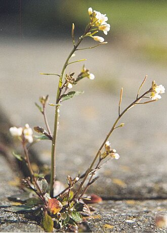
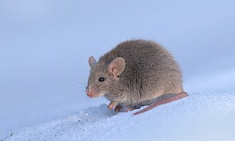
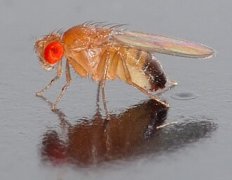
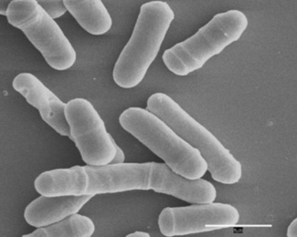

Is there already an organism that could do this?
Making soil on Mars needs one organism that does two unrelated things at once: survive Mars, and enrich the dirt, turning dust into something a plant can live in. If such an organism already exists, there is nothing to design. Find it, and use it.
So every organism the search turned up, 322 of them, was scored on both halves, survival and enrichment, and plotted on one map.
The 23 jobs
This is the whole list, and every organism on the map was scored against it, including our own design. It is grouped by the trait each job belongs to, because a trait usually needs more than one job done before it counts for anything: surviving the cold means both not freezing solid and still working once cold.
Survival on Mars – 13 jobs
| Trait | The job |
|---|---|
| Survive freezing | Keep working in the freezing cold |
| Stop ice from tearing the cell apart | |
| Survive drying out | Hold everything together once the water is gone |
| Make the sugar that protects it while dry | |
| Repair radiation damage | Put a shield around the DNA |
| Mend the DNA that gets broken anyway | |
| Handle toxic chemicals | Catch the first burning chemical |
| Destroy the second one before it burns the cell | |
| Detoxify the Mars poison | Break down the poison in the Mars dust |
| Finish the poison off, and get oxygen back | |
| Live without oxygen | Make energy with no air |
| General damage control | Grab broken proteins before they stick together |
| Fold them back into shape |
Soil enrichment – 10 jobs
| Trait | The job |
|---|---|
| Make food out of thin air | Catch carbon dioxide straight out of the air |
| Keep the carbon-catching cycle turning | |
| Break down dead plants | Chew up tough plant stalks and leaves |
| Chew up fungus threads and insect shells | |
| Make nitrogen fertiliser | Pull plant food out of thin air |
| Unlock minerals from rock | Unlock phosphorus from solid rock |
| Pull iron out of the dirt | |
| Team up with other microbes | Build a home the helpful microbes can live in |
| Digest food | Break down starch, the stuff in a potato |
| Break down fat and oil |
How the score works
One point for each job the organism has a protein for, however well it does it, so the most anything can reach is 13 and 10. Stage 1 works through an example.
The answer: no, and not close
| Half of the job | Best any organism reached | Out of |
|---|---|---|
| Survival on Mars | 8 | 13 |
| Soil enrichment | 7 | 10 |
| Both together | 14 | 23 |
The best single organism is Arabidopsis thaliana, at 7 of 13 and 7 of 10, and it is a plant that would freeze solid on Mars before doing any of it. The corner where one organism does both is empty.
The ten that came closest
| Organism | Survival | Soil enrichment | Total | |
|---|---|---|---|---|
 |
Arabidopsis thaliana | 7/13 | 7/10 | 14/23 |
| Escherichia coli | 8/13 | 5/10 | 13/23 | |
| Saccharomyces cerevisiae | 7/13 | 4/10 | 11/23 | |
| Bacillus subtilis | 5/13 | 5/10 | 10/23 | |
| Homo sapiens | 4/13 | 5/10 | 9/23 | |
 |
Mus musculus | 4/13 | 5/10 | 9/23 |
 |
Drosophila melanogaster | 4/13 | 3/10 | 7/23 |
 |
Schizosaccharomyces pombe | 4/13 | 3/10 | 7/23 |
| Oryza sativa subsp. japonica | 3/13 | 4/10 | 7/23 | |
| Deinococcus radiodurans | 6/13 | 0/10 | 6/23 |
The pattern is in the last row. The organisms strong on survival and the organisms strong on soil are different organisms, and Deinococcus radiodurans is the clearest case in the whole dataset: 6 of 13 on survival, and a flat 0 of 10 on enrichment. One of the toughest organisms known, and it would do nothing whatsoever to a field.
The jobs almost nobody can do
These six are why the corner stays empty. A trait needs every one of its jobs done, so a job only one organism on Earth can do is a wall across that whole half of the map.
| Job | Organisms that can fill it |
|---|---|
| Break down the poison in the Mars dust | 1 of 322 |
| Finish the poison off, and get oxygen back | 2 of 322 |
| Grab broken proteins before they stick together | 2 of 322 |
| Build a home the helpful microbes can live in | 4 of 322 |
| Keep the carbon-catching cycle turning | 5 of 322 |
| Pull iron out of the dirt | 5 of 322 |
What this means for the project
No organism on Earth survives Mars and enriches the dirt, so the design cannot be found. It has to be assembled: the best real gene for each of the 23 jobs, from whichever organism does that one job best. That is Stage 2, and it ends with a list of genes to order.
What this score cannot see
The earthworm scores zero on survival and zero on enrichment. Lumbricus terrestris, the animal that actually does this job on Earth, sits in the bottom-left corner, because only 27 earthworm proteins have ever been reviewed and not one is a soil enzyme. An empty score can mean an empty shelf, so the map gives the earthworm a second, hollow dot where it would sit if anyone had done the work.
Missing data runs the wrong way to help, though. The organisms at the top of this list are the best-studied on Earth, with every advantage that gives. If they cannot survive Mars and enrich the dirt, nothing on Earth can.
The second limit, plainly: having a gene is not the same as thriving. This is a map of what is possible, not a prediction.
Scoring our own design, by the same rule
Stage 2’s design, 37 genes from 18 organisms, went through the same code and reaches 13 of 13 and 10 of 10: the empty corner, filled.
That is the definition, not a discovery. It was built by filling every job, so of course it fills every job. The narrower claim is the real one: no single organism reaches that corner, and a combination of real genes does. Whether it works in a living cell is what the stages after this are for.